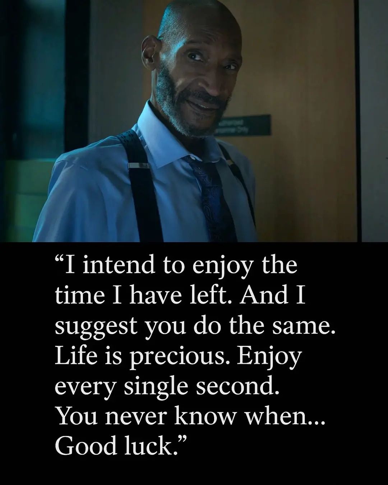

日常#1
最近买的书、死神来了、空洞骑士、娃娃菜、博客改动、多邻国
{kind=link}

去书店逛了逛，看到一些挺有趣的书，回头线上买了一些看：
- 幽灵塔 | [日] 江户川乱步 著 / [日] 宫崎骏 绘
- 假面的告白 | [日]三岛由纪夫
- 悉达多 | [德] 赫尔曼·黑塞
- 克林索尔的最后夏天 | [德] 赫尔曼·黑塞
- 夏日走过山间 | [美] 约翰·缪尔
- 涅朵奇卡 | [俄] 陀思妥耶夫斯基
- 豆汁记 | [中] 叶广芩 1
- 紙上染了藍 | [中] 周耀辉 2
- 中文打字机 - 一个世纪的汉字突围史 | [美] Thomas S. Mullaney
最近还在看 史蒂夫·乔布斯传。
乔布斯是一个被领养的孩子，他喜欢禅，早年间还去过印度修行。
他情绪多变，书里总是描写他忍不住哭；
他待人刻薄，会把看不上的人贬得什么都不是；
他极度追求完美，即使是那些看不见的地方也要设计得整齐精美，对细节的要求很高，对人的要求也很高；
他有「现实扭曲力场」，能让周围的人相信他，相信他说的话，像是一种蛊惑人心的力量。
他也影响着世界，例如他做出了首个搭载图形界面的个人电脑，让图形界面变得流行。
书的作者是 Walter Isaacson，他写过不少人的传记，行文看着蛮舒服的。
去电影院看了 死神来了：血脉诅咒，挺刺激的，不少血腥的场面。
最刺激的应该是开场那一段了，一群人在一座高塔上，然后发生了事故，非常的惨烈。3
剧情上也会设置一些悬念，以为这个人会是这种死法，他却刚好逃过了，提心吊胆地看他到底会怎么死。
我觉得看电影会有些怕，可能是因为幻痛感，虽然受伤的是角色，但想到如果发生在自己身上一定很痛，因此而带来了一些害怕和紧张。
看到一个 影评，剧中出演医生的 Tony Todd，在电影开拍的时候，已确诊了胃癌晚期，但还是主动找上制作人加入了拍摄。
导演邀请他在对话的结尾为主角来一段即兴独白，于是就有了荧幕里的那段：
「我打算好好享受剩下的时光，而且我建议你们也这样做。
生命是宝贵的，享受每一秒。
你们永远不知道死亡会在何时到来……祝你们好运。」4
空洞骑士：丝之歌 要发售了，我还没玩过空洞骑士，看到 Steam 上空洞骑士还支持 macOS，就下来玩了一下。
游戏开始的时候是没有地图的，需要找到地上散落的图纸，跟着图纸找到绘制地图的 NPC，向他买地图，才能知道自己大致的位置。
当去到一个新区域，一般就是到处瞎逛，有入口就进去看看，总能发现一些新的场景，新的小怪，挺有探索感的5。
游戏操作起来也有一点难度，例如有的地方可能需要连续的下劈，或者需要来回冲刺左右横跳，有时会手忙脚乱按错。
目前我玩的强度不高，才开了 4 个区域，打了 2 个 boss，无聊的时候就打开玩半小时到一小时，探索一些新区域，有种脱离现实，去圣巢里旅游一阵子的感觉，这游戏估计我能玩很久。
想着手柄操作可能会容易一些，就买了一个北通的手柄，但似乎 macOS 版本的空洞骑士不支持手柄，连接之后，游戏的指针来回跳动，完全用不了。
查了一下，有人说 安装 Lumafly 然后启用 ControllerFixes mod 可以解决，尝试了一下，确实可以用了，但是不知道为啥手柄一直在震动，手都麻了，索性放弃了，就用键盘玩吧。
娃娃菜 2 吃：娃娃菜蒸牛肉、醋溜娃娃菜。超市买的娃娃菜一般都有 3 颗，再买点牛肉就可以做两个菜，够两个人吃一顿了。
娃娃菜蒸牛肉
- 牛肉切片（切条也行，怎么方便怎么来，不要太厚就行），然后加入一勺蚝油、一勺生抽（不够咸下次可以多加点）、适量淀粉、少许油6，搅拌均匀后腌制 10 分钟的样子（期间去准备其他材料，很快就到时间了）
- 找一颗娃娃菜，一分为二，把菜帮子铺在一个盘子里，再将牛肉铺在上面
- 锅里烧开水，找个蒸屉，把牛肉放上去蒸个 15 分钟的样子（如果不熟就多蒸会儿）
醋溜娃娃菜
- 娃娃菜切段（一分为二或者一分为三），准备一些小米辣和蒜
- 油热后，先放小米辣和蒜炒香，把娃娃菜全都丢进去，炒软
- 加入一勺蚝油，一勺生抽（不够咸就多放点，或者加盐），一勺陈醋或者香醋（喜欢酸就多来点），少许的糖（可能是用来中和酸味），翻炒一阵子，看起来熟了就好了（不确定就尝一口）
前阵子投稿了一篇 Emacs Elevator Pitch - Only Emacs can save your soul，里面有很多关于 Emacs 的话，我就想高亮一下 Emacs，从而突出它。
高亮用的是 <mark> 元素，默认是黄色的，但又一想，为什么不做成 Emacs 图标的样式呢，就模仿 Emacs 的图标，做成了渐变色。还给每个 <mark> 元素设置了 title 属性，是一些 Emacs 的首字母缩写扩展7，例如 E scape M eta A lt C ontrol S hift 。
文章里有很多个这样的元素，正好看到了 org-mode 中的 macro replacement，文章中就是通过 macro 实现的：
- macro 的定义：
#+MACRO: emacs @@html:<mark class="emacs" title="$1">Emacs</mark>@@ - 在文章中使用：
{{{emacs(Escape Meta Alt Control Shift)}}}
这样写起来就比较方便，感兴趣可以看看 原始的 org 文件。
最近我也对博客做了一些小的样式改动：
- 使用不同的下划线样式区分了内部链接和外部链接，内部链接是虚线，外部链接是实线，hover 上去的时候会增加下划线的粗细。有的网站还会针对访问过8的链接设置样式，我试了一下，但还没调出一个好看的样式。
- 给 Album 系列中的专辑封面设置了样式，本来想模仿黑胶或者 CD 的塑封效果的，但不知道怎么实现，目前就增加了一些阴影，你可以在 Album#0 - Live at Revolution Hall 看看效果。
一直有听说过 多邻国，但从来没有下载用过，最近好奇下了用了一阵，我觉得这个应用做得很棒。
它的课程设计挺有趣的，形式很多样，结合了听说读写，反复地让你学习几个单词，每完成几道题就会有完成的动画，给你带来反馈和成就感，不知不觉我就跟着用了半小时。
我觉得这样的学习方式，比干背单词要有趣的多，感觉小朋友也会很喜欢，如果有孩子，和孩子一起打卡也是不错的。
最近也在想办法提升自己的英语水平，希望能达到比较流畅的读写能力，先试试 人人都能用英语 中的方法。
脚注:
从 入蜀记 59 耙耳朵车 了解到的一本书
电影里还有一个 MRI (Magnetic resonance imaging) 的死法，让我以后去做 MRI 检查都有点阴影了。
I intend to enjoy the time I have left. And I suggest you do the same. Life is precious. Enjoy every single second. You never know when…Good luck
看了个视频: 【游戏罗马】 银河恶魔城的诞生与要素设计，大概明白为什么会有一种探索感了，这正是类银河恶魔城游戏的特点。这类游戏需要你重复的探索地图，当你学会新技能后再回来，那些曾经走不通的地方就能走了，获得新能力后也能很大地扩展你探索地图的能力；在地图中会藏一些有趣 NPC 或事件，增加你探索地图的乐趣；游戏的故事很庞大，会给你一些物品，需要自己慢慢去拼凑出故事的全貌；这些都是鼓励你慢慢地去探索。这应该是我第一次玩类银河恶魔城的游戏，还挺有趣的。游戏的也有种 来自深渊 的感觉。
这是基本的调料，也可以根据个人喜好，试试加点辣椒粉之类的，反正目的就是给牛肉上一个自己喜欢的味道